Method to calculate frequency domain parameters of non-coherent waveform - Part 1
Akinori Maeda, Verigy
Paper-ID: 124239 June 2010
Background
Frequency domain parameters; like THD, SNR or SFDR are major parameters to evaluate waveform performance, especially for sine waveform. In general, waveform is measured by the spectrum analyzer and those frequency domain parameters are evaluated. But, measurement speed of the spectrum analyzer is relatively slow and this method cannot be used at production test environment. In production test environment, waveform is digitized by the digitizer or the sampling oscilloscope. Fast Fourier Transform (FFT) of the digitized data is calculated and then frequency domain parameters are calculated. Data processing power of the recent workstation or PC is strong and FFT calculation of 1024 points of data can be done in less than 1 ms. This processing time is fast enough to satisfy the test time requirement of production environment.
To obtain correct frequency domain parameters by FFT calculation, integer number of periods of waveform in the whole data points is required (coherent condition). FFT calculation assumes that the sampled waveform is repeated infinitely. If this coherent condition is not satisfied, discontinuous is occurred when waveform is repeated. The figure 1 shows the example waveform. The Unit Time Period (UTP) means the time to capture whole data points. The parameter ‘M' is number of periods in UTP. Waveform in UTP is assumed repeated infinitely when FFT is calculated. The above waveform in the figure 1 meets coherent condition and the below waveform in the figure 1 does not meet coherent condition.
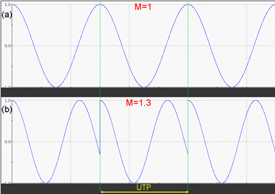
Figure 1: Continuous and discontinuous waveform [1]
This discontinuous cause large leakage spectrum and frequency domain parameters cannot be correctly calculated. The figure 2 shows the example spectrum of continuous and discontinuous waveforms. The blue lines show FFT result when waveform does not meet coherent condition, and the red lines show spectrum when waveform meets coherent condition.
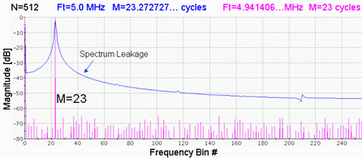
Figure 2: Leakage Spectrum [1]
To capture waveform correctly to meet coherent condition, measured waveform and sampling clock of the digitizer must be synchronized and also the precise frequency relationship must be met. This relationship is described as follows.
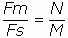
Equation (1)‘Fm' is the frequency of measured waveform. ‘Fs' is the sampling frequency of the digitizer. ‘M' is the number of sampled data and ‘N' is the periods of measured waveform in the sampled data (M). For example, when 1MHz sine waveform is measured and 15 periods are in 1024 data points, the sampling frequency must be 68.26666...MHz.
But in many cases, above relationship cannot be met while measurements are performed. For example, frequency setting resolution is not precise enough, sampling frequency is fixed (in case of the digitizing oscilloscope) or measured frequency is unknown. To perform frequency domain analysis in these conditions, non-coherent condition, the window function is used. But some of frequency domain parameters are not calculated correctly.
This paper introduces the method to calculate correct frequency domain parameters from the data captured at non-coherent condition.
Window function
As described above, the window function is used to perform frequency domain analysis from the data captured at non-coherent condition. The figure 3 shows example waveform when the window function is applied. The red lines in the figure 3 show original waveform and the blue lines show the waveform after the window function is applied (Hanning window). When the waveform after the window function is applied is repeated, there is no discontinuous because the amplitude of waveform at the boundary is 0.
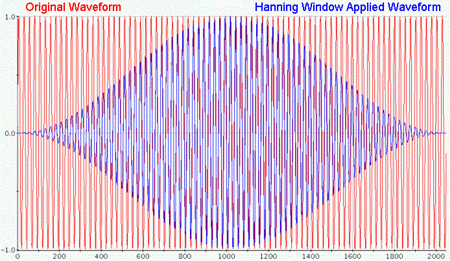
Figure 3: Waveform after applying window function [2]
There are several kinds of window functions. Some examples are shown in http://en.wikipedia.org/wiki/Window_function. The window function must be correctly selected according to the parameter what you want to obtain from frequency domain analysis. The Verigy V93000 SOC Test System prepares four window functions that are widely used for generic purpose. The details of these window functions are described in the document: "SmarTest 6.5.2 Documents" of the Verigy V93000 SOC Test System.
Rectangular window
"The rectangular window does not apply any window function before the FFT. The maximum amplitude error due to window attenuation is up to 4 dB when the signal is at the extreme edge of a frequency bin.
This window is used with coherent signals and when the signal spectrum is rather flat or broadband in frequency content." [3]
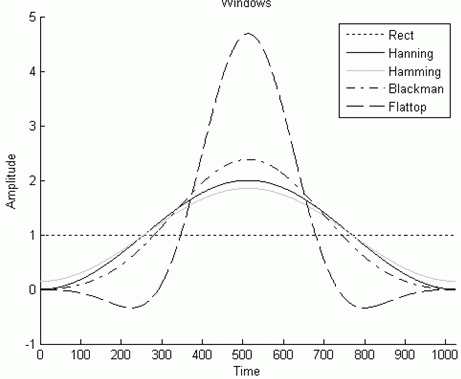
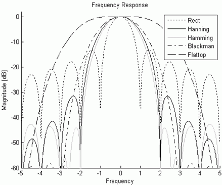
Figure : Responses of window functions [3]
Hanning window
"The Hann or Hanning window is basically a good compromise: it provides good selectivity near the top (about 6 dB down one frequency bin away from center and about 30 dB down two bins away), and the maximum amplitude error is about -1.5 dB.
The Hanning window is satisfactory in most cases as it has good frequency resolution as well as reduced spectral leakage. It is the window of choice for sine waves, combinations of sine waves, narrow-band random signals and signals containing strong interfering frequency components distant from the frequency of interest. It is also the best choice if the observed signal is completely unknown." [3]
Blackman window
"The Blackman window is a general purpose spectrum analysis window like the Hanning window. It has reasonable frequency selectivity while the maximum amplitude error is less than -1.1 dB. With a maximum side lobe level of -58 dB, it provides much better stopband attenuation than the Hanning window.
The Blackman window has almost the same application range as the Hanning window." [3]
Flat-Top window
"The Flat Top window has the widest main lobe and the lowest maximum side lobe level of all furnished windows: -95 dB. Its maximum amplitude error due to window attenuation is less than -0.01 dB even if the signal is at the extreme end of the bin. Due to the wide main lobe, its selectivity is poorer than that of the other windows furnished.
The Flat-Top window is designed for the greatest amplitude measurement accuracy and thus is the appropriate window for accurate amplitude measurements, such as when measuring individual harmonics." [3]
Hamming window
"The Hamming window has the narrowest main lobe and thus the best frequency selectivity of all furnished windows. Adjacent frequency bins average about 7 dB down and two bins away the response is about 40 dB down. The maximum amplitude error is about -1.7 dB. The Hamming window has considerable side lobes starting only 40-50 dB below the center bin, or about 4 bins away from center.
The Hamming window is the window of choice for closely spaced sine waves as it has the best selectivity near the top; however it has limited rejection of more-distant signals." [3]
Spectrum Example
The figure 5 shows the example spectrums after several window functions are applied to same waveform. The frequency of this waveform is 7.455MHz and it is sampled at 163.84MHz. Number of captured data is 16384 and 745.5 periods of sine waveform are captured. The number of periods in whole data is not integer and this means that this waveform is measured at non-coherent condition.
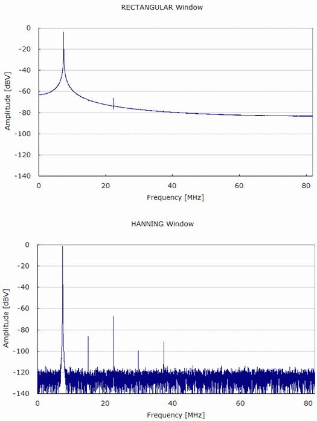
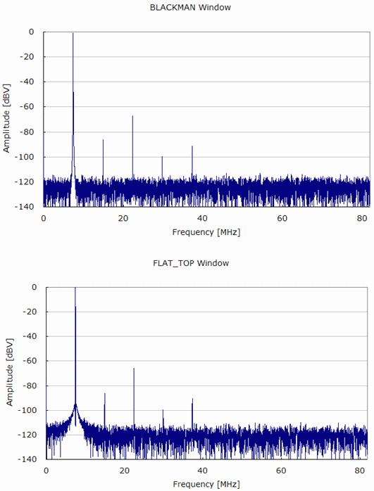
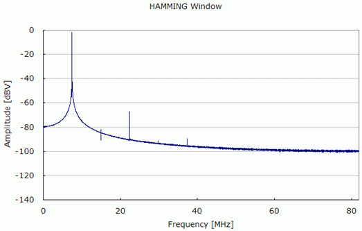
Figure : Example Spectrums of window function
The figure 6 shows the spectrums close to the fundamental spectrums shown in the figure 5. From these figures, the differences of spectrum shapes of the each window function are obvious, and it is clear that each window function is focused to obtain specific frequency domain parameters.
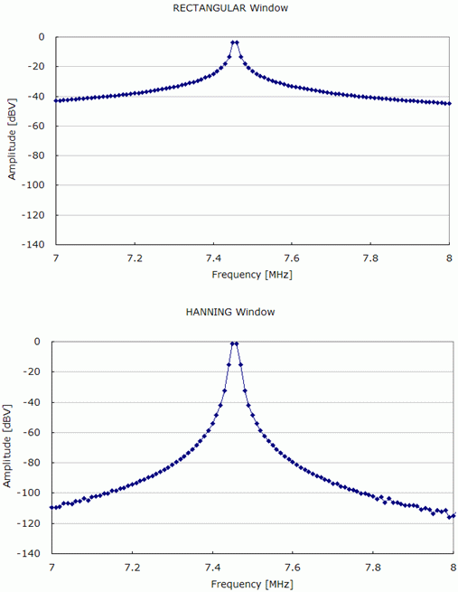
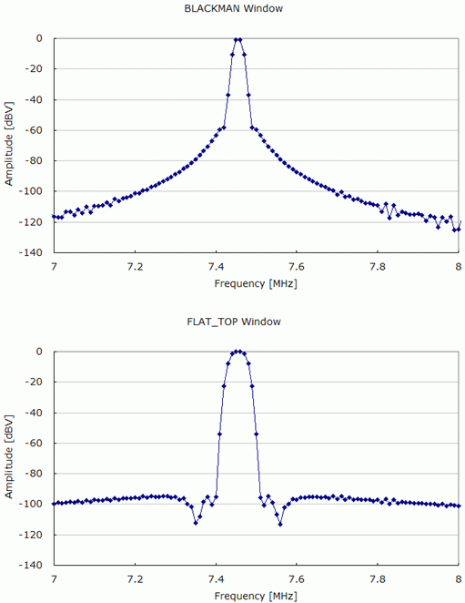
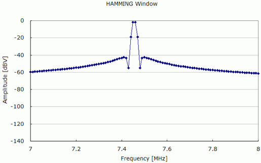
Figure : Spectrums close to the fundamental spectrum
The table 1 shows the calculated frequency domain parameters from when the each window function is applied. The FLAT_TOP window function provides the correct amplitude of spectrum, but it has large error of SNR. The HANNING and the BLACKMAN window functions provide better SNR results but the errors of SNR are about 3dB and also they have large errors of amplitudes.
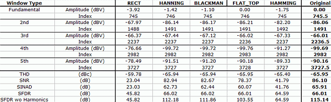
Table : Frequency domain parameters of window functions
From those results, it is obvious that the single window function provides correct results of only some of frequency domain parameters, not all of them. And all of the window functions do not provide the correct SNR result.
Method to calculate correct SNR
One of the popular methods to calculate correct SNR value from the data measured at non-coherent condition is to subtract estimated fundamental sine waveform from the captured data, and then noise power is calculated from the residual waveform.
For estimating the fundamental sine waveform, the Tabei-Ueda method is widely used and this method provides very accurate estimated sine waveform parameters. The details of the Tabei-Ueda method are described in the reference [4]. Also the detailed method to calculate SNR is described in reference [5] and [6]. These methods are powerful and provide correct SND value in most of the cases.
After removing the fundamental sine waveform, it needs to calculate noise power from the residual waveform. There are two methods to calculate noise power. One is using FFT with RECTANGULAR window function and another is to calculate RMS power of the residual time domain waveform. The latter method is simple but it only provide SND value and it cannot calculate SNR (without harmonics) value.
To calculate SNR value, harmonic distortion power must be calculated from the residual waveform. To calculate correct harmonic distortion power from FFT result, the window function must be FLAT_TOP or RECTANGULAR. When the FLAT_TOP window function is applied, the correct harmonic distortion power can be calculated. Then this harmonic power is subtracted from the RMS noise power calculated from the residual time domain waveform. But it cannot calculate SFDR value by this method.
When the RECTANGULAR window function is applied, you can calculate harmonic distortion power, noise power without harmonic distortion and SFDR value if harmonic distortion amplitudes are not so large. If harmonic distortion amplitudes are large, FFT result has leakage spectrum and correct harmonic distortion power or noise power cannot be calculated. At this point, ‘large harmonic distortion amplitude' means that the amplitude of harmonic distortion is very larger than the noise level. For example, the figure 7 shows the FFT results when the RECTANGULAR window function is applied to captured waveform and the residual waveform. The FFT result of the residual waveform has leakage spectrums, and the calculated noise power from this result is not correct.
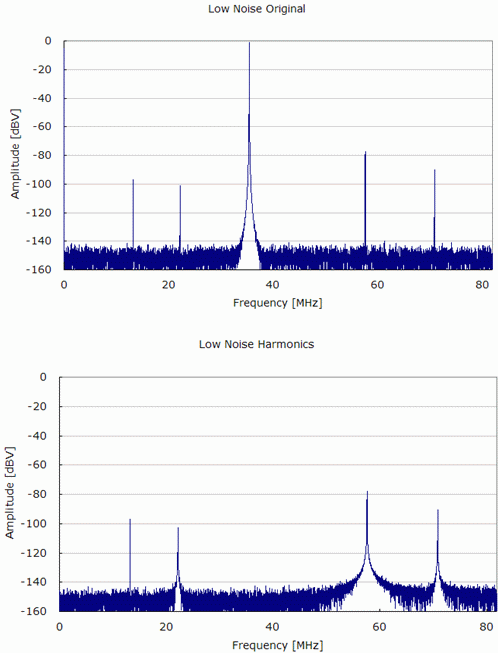
Figure : FFT results of low noise condition
The figure 8 shows the FFT results of same data but at higher noise level condition than the figure 7. In this case, the FFT result of the residual waveform has no leakage spectrum and it can calculate correct harmonic power and noise power.
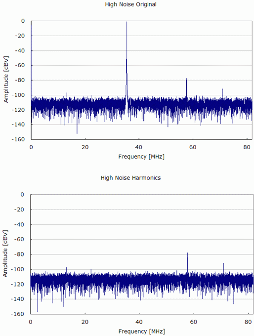
Figure : FFT results of higher noise condition
As described here, this method may not provide correct frequency domain parameters.
Summary
In general waveform measurement, it is often not to meet coherent condition. At this non-coherent condition, all of correct frequency domain parameters can not be calculated even with the window function. There are several methods to provide all of frequency domain parameters from the waveform measured at non-coherent condition, but the results of these methods may not be correct enough at low noise level or large amplitude conditions.
The Part 2 will introduce the new method to provide correct frequency domain parameters at almost any conditions.